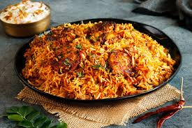

Biryani is a celebration of all that is great about Indian food – the heady aromas, the vibrant colours, the fluffy rice and those addictive curry flavours. Make this Chicken Biryani with your protein of choice – or try a vegetable biryani! One of the most requested recipes is finally here! Another RecipeTin Family effort, it took us seven attempts to get this biryani right. Seven attempts means seven heated arguments about who would take the leftover biryani because somebody in the RecipeTin family, at any point in time, usually declares themselves to be on a diet to address blog-related weight gain concerns. And it was worth it. (Belly and all.) Biryani, we can’t get enough of you!
You’ll find variations of Biryani all across the Indian subcontinent. There are 2 main types – one where the protein and/or vegetables are cooked mixed throughout the rice, and the other version known as Hyderabad-style biryani in India where meat and rice are layered and cook in a sealed pot over fire. The latter is the style of biryani I’m sharing today. There’s a wonderful Afghani restaurant in my area called Sahar (Newport, Sydney) which serves a Biryani that’s a huge favourite among locals. Hands down, the best ethnic restaurant I know in the upper northern beaches.

Chicken marinated in a spiced yoghurt is placed in a large pot, then layered with fried onions (cheeky easy sub below!), fresh coriander/cilantro, then par boiled lightly spiced rice. The crowning glory is to finish it off with a drizzle of saffron infused water to give it the signature patches of bright yellow rice, as well as ghee (or melted butter) for buttery richness. The pot is then covered and cooked over a low heat for about 25 minutes during which time the rice absorbs the aromas and flavours of the curry underneath, whilst still being beautifully fluffy.